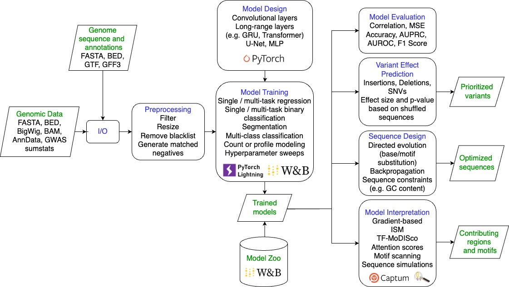
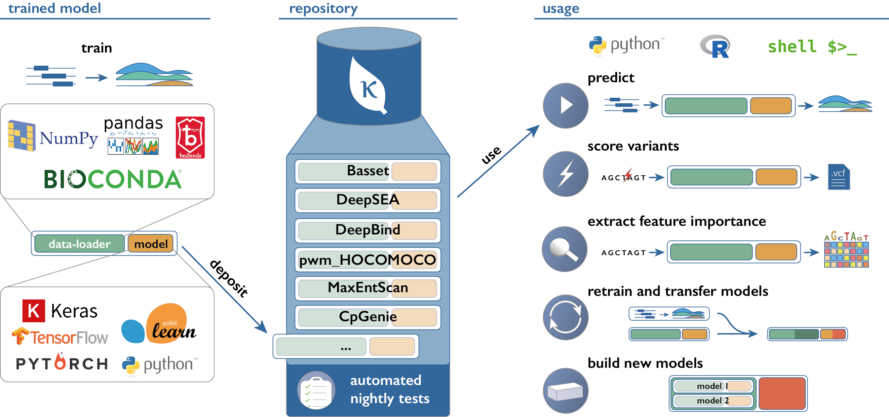

7 Software libraries for model building
7.1 gReLU
gReLU is a Python library to train, interpret, and apply deep learning models to DNA sequences”. The gRelu library contains a model zoo allowing for easy access to several models such as Borzoi, Enformer, or a dilated convolutional model based on the BPnet model architecture. Some of these models can be imported pre-trained. Additionally, simpler base models and convolutional neural networks are also available. On top of access to already built models, the software library allows for designing your own models.
Source: gRelu
Their documentation contains all their available functions and includes tutorials on using gRelu.
7.2 Kipoi
Kipoi is a repository of ready-to-use trained models for genomics. Referring back to the reproducibility of machine learning models, Kipoi contains 2206 different gold standard models, available to be downloaded and tested in a few lines of code.

Source: Kipoi
Similarly to gRelu, they include several use case tutorials and a model zoo. Downloaded models can also be built upon to conduct further research as links to the github source code of each model are provided.